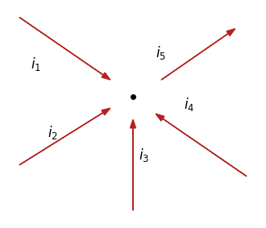
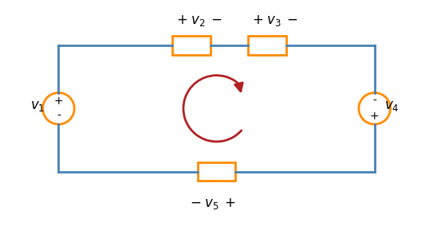
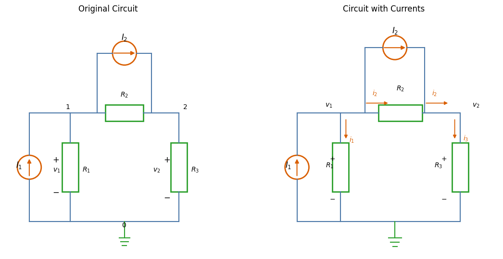
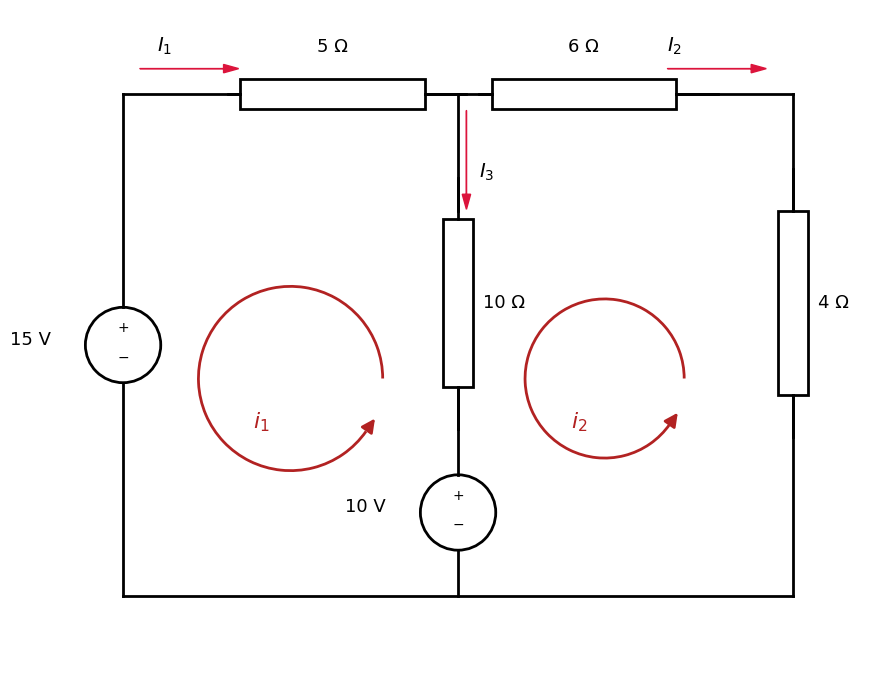

Electric circuits#
There are five basic circuit elements:
voltage sources
current sources
resistors
inductors
capacitors
A resistor is described mathematically using its voltage and current, and the relationship is known as Ohms’s law
v = voltage i = current R = resistor
The power equation:
where p = the power in watts, v = the voltage in volts, i = the current in amperes, is derived from the definition of power:
w = the energy in joules, and t = the time in seconds.
The power in a resistor in terms of current is:
The power in a resistor in terms of voltage is:
Laws for Circuit analysis#
The two fundamental laws for analysing electric circuits are Kirchoffs law.
Kirchoff’s current law (KCL)#
Kirchoff’s law of currents (KCL) states that that the algebraic sum of currents entering a node is zero.
where N is the number of branches connected to the node and is the nth current entering (or leaving) the node. By this law, currents entering a node may be regarded as positive, while currents leaving the node may be taken as negative or vice versa.
or:
and as depicted in the figure:

Kirchhoff’s voltage law (KVL)#
Kirchhoff’s voltage law (KVL) states that the algebraic sum of all voltages around a closed path (or loop) is zero. Expressed mathematically:
where M is the number of voltages in the loop (or the number of branches in the loop) and \(v_m\) is the mth voltage.
The sign on each voltage is the polarity of the terminal encountered first as we travel around the loop. We can start with any branch and go around the loop either clockwise or counterclockwise.
If we start with the voltage source, \(v_1\) and go clockwise around the loop as shown; then voltages would be \(-v_1+v_2+v_3\) and in that order. For example, as we reach branch 3, the positive terminal is met first; hence, we have \(+v_3\). For branch 4, we reach the negative terminal first; hence \(-v_4\), Thus, KVL yields
and rearranged:
interpreted as: Sum of voltage drops = Sum of voltage rises

Methods for Circuit analysis#
Nodal analysis (based on a systematic application of KCL)
Mesh analysis (based on a systematic application of KVL)
The two techniques are so important that they should be regarded as the most important in circuit analysis.
Nodal analysis#
Nodal analysis analyzes circuits using node voltages as the circuit variables. Choosing node voltages instead of element voltages as circuit variables reduces the number of equations one must solve simultaneously.
When analysing circuits we think of power injected as current sources.
In nodal analysis, we are interested in finding the node voltages. Given a circuit with n nodes without voltage sources, the nodal analysis of the circuit involves taking the following three steps.
Remember that number of nodes is n, and there is 1 reference node ($v_o=0), which leaves n-1 non-reference node. The number of nonreference nodes is equal to the number of independent KCL-equations that we will derive.
Steps to Determine Node Voltages#
Select a node as the reference node. Assign voltages
v1, v2, …, vn-1 to the remaining n − 1 nodes. The
voltages are referenced with respect to the reference
node.Apply KCL to each of the n − 1 nonreference nodes. Use
Ohm’s law to express the branch currents in terms of
node voltages.Solve the resulting simultaneous equations to obtain
the unknown node voltages.
Circuit example with injected currents#
In the circuit, a node is any point where two or more elements are connected by ideal wires. From the labels shown:
Node 0: the reference (ground) node connecting the bottoms of \(R_1\), \(R_3\), and the current source \(I_1\).
Node 1: connects the top of\(R_1\), the left side of \(R_2\), the top of \(I_1\), and the left terminal of \(I_2\).
Node 2: connects the right side of \(R_2\), the top of \(R_3\), and the right terminal of \(I_2\).
Therefore the circuit has n = 3, 3 nodes. Leabing n-1 nonreference nodes of 2.
Step 1#
In the original circuit below, the first step is to choose point 0 as the reference node, and assign the 2 nonreference node voltages \(v_1\) and \(v_2\).

Step 2#
Apply KCL: $\(I_1 = i_1 + i_2\)$
We now apply Ohm’s law to express the unknown currents and in terms of node voltages. The circuit has active and passive elements in the form of injected currents and resistors. Passive elements are circuit components that cannot generate net energy. They can only absorb energy (convert it to heat, light, etc.), or store energy temporarily and later release it.
Element |
Passive or Active? |
Function |
|---|---|---|
Resistor |
Passive |
Dissipates energy |
Capacitor |
Passive |
Stores electric-field energy |
Inductor |
Passive |
Stores magnetic-field energy |
Current Source |
Active |
Can deliver energy |
Voltage Source |
Active |
Can deliver energy |
For the active elements such as th current source \(I_1\) pushes current upward. If the voltage across the source is: + at top,− at bottom then the current enters the negative terminal, not the positive terminal.
A negative power indicates the source is delivering power to the circuit.
For the passive elements we apply passive sign convention (PSC). The Passive Sign Convention (PSC) is a rule used to determine whether an element is absorbing or delivering power.
If current enters the positive terminal, then
\(p>0\): the element absorbs power (e.g., resistor, charging battery).
\(p<0\): the element delivers power (e.g., source supplying energy).
Current must always flow from a higher potential to a lower potential.
Which means that in the circuit we have:
might also be explained by conductance G:
Step 3#
We need n-1 equations.
Rearrange:
equation 1: $\(I_1 = I_2 +\frac{v_1}{R_1} + \frac{v_1-v_2}{R_2}\)$
equation 2: $\(I_2+\frac{v_1-v_2}{R_2} = \frac{v_2}{R_3}\)$
Mesh Analysis#
Nodal analysis applies KCL to find unknown voltages in a given circuit, while mesh analysis applies KVL to find unknown currents.
A mesh is a loop which does not contain any other loops within it.
Steps to Determine Mesh Currents:#
Assign mesh currents to the n meshes.
Apply KVL to each of the n meshes. Use Ohm’s law to express the voltages in terms of the mesh currents.
Solve the resulting n simultaneous equations to get the mesh currents.

In the example above the n mesh currents is n = 2, we assign \(i_1\) and \(i_2\) to the mesh currents.
Apply KVL on mesh 1:
Apply KVL on mesh 2: $\( -10 + 10(i_2-i_1) +6\cdot i_2 + 4\cdot i_2 = 0\)$
We have to sets of equations $\( \begin{aligned} 3i_1 - 2i_2 &= 1 \\ -i_1 + 2i_2 &= 1 \end{aligned} \)$
There are 3 methods that can solve this:
Substitution method
Cramers rule
Matrix inversion
We can put on standard matrix form Ai=b
And solve by matrix inversion:
A = np.array([[3, -2],[-1,2]])
b = np.array([[1],[1]])
A_inv = np.linalg.inv(A)
i = A_inv @ b
print('The first mesh i_1=', np.round(i[0,0]))
print('The second mesh i_2=', np.round(i[1,0]))
The first mesh i_1= 1.0
The second mesh i_2= 1.0